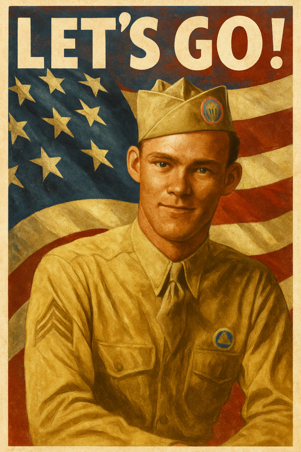

Tap any thumbnail to open its episode page. New stories are added here as soon as they’re released.

Jumping Joe Beyrle
A paratrooper who escaped German captivity and fought on with the Soviets.

Tarawa
Tarawa – 76 Hours on the Edge of the Pacific.

Operation Chastise
Low-level bombers and bouncing bombs take on Germany’s great dams.